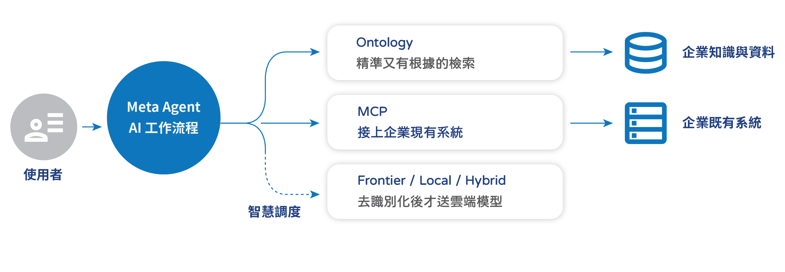
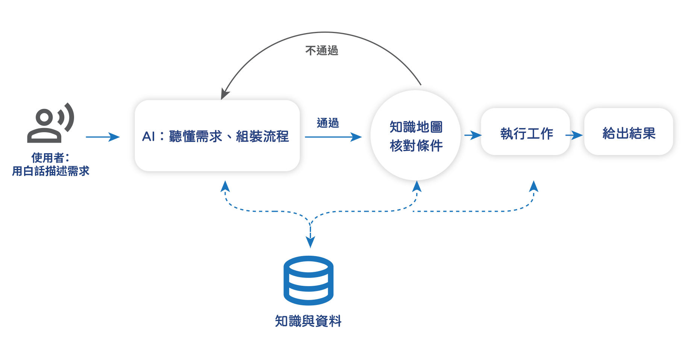
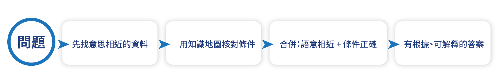
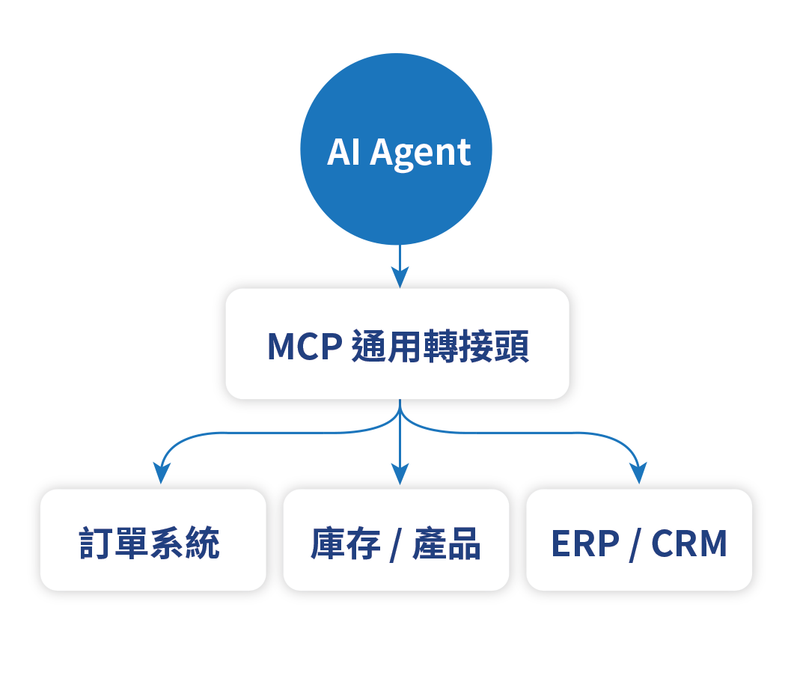
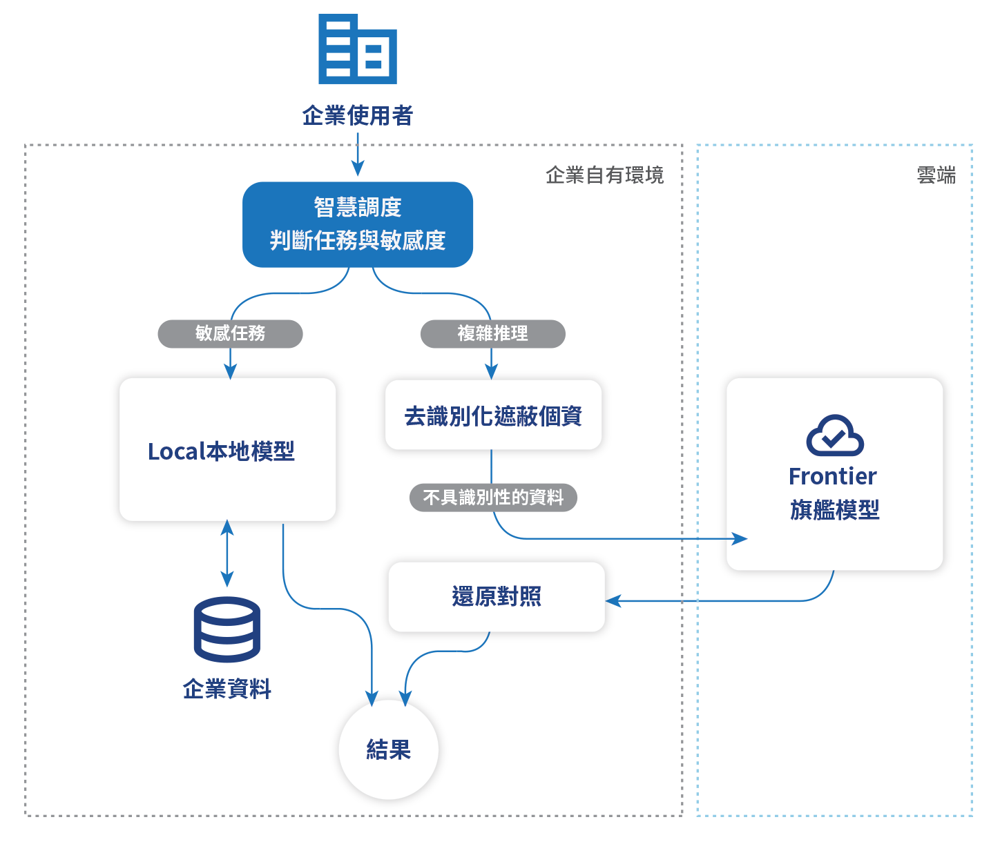

四項核心技術，彼此相扣
一般聊天機器人只會「一問一答」。
Meta Agent 由四項技術協同運作，把企業知識轉化為可執行、可驗證、可私有化的 AI
生產力。
Meta Agent Workflow
Ontology
Model Context Protocol
Frontier / Local / Hybrid 智慧調度

四大技術，逐一拆解
每項技術都有明確定位、核心特色與適用場景，並附上運作流程。
Meta Agent Workflow
像招募員工一樣，用「講的」就能打造會做事的 AI 工作流程
一般聊天機器人只會一問一答；Meta Agent Workflow 打造的，是一條會照步驟把工作完成的 AI
工作流程
你用白話描述需求，它就拆解成一連串步驟（理解需求 → 知識圖譜建立工作流 → 執行工作 →
產出結果），先確認條件成立才動手，一步步把事情做完，例如幫旅行社算報價、幫客服查訂單並處理退換貨。
- 用「講的」就能建立會做事的 AI 工作流程，全程不用寫程式
- 流程每一步都先把關、再執行，答案不亂編
- 企業知識與資料貫穿「聽需求・把關・執行」全程
- 要調整時用對話就能改，不必重做
- 換產業只要換知識，不必重寫程式碼
- 每個客戶的資料與權限彼此隔離

與市場差異化：市面上多數「AI Agent」只是一大段 prompt ＋ 一問一答；Optimus 是「可組裝、每一步都能驗證」的工作流程，兼顧 AI 的靈活與答案的可靠。
Ontology
幫 AI 把答案查得又準、又說得出根據
一般 AI 找資料只看「意思像不像」，遇到有明確條件的問題（例如「5 天、兩人、預算 3 萬」）容易挑錯。Ontology 把企業知識整理成一張定義清楚、有關係與規則的「知識圖譜」；在語意比對之外多一道核對條件，答得更準，也說得出「為什麼是這個答案」。
- 語意比對＋知識圖譜核對條件，答得更準
- 答案有根據、可解釋，不是黑盒子
- 支援多語系，不限特定語言

MCP · Model Context Protocol
AI 世界的「通用轉接頭」，把企業既有系統接上 AI
企業早就有訂單、庫存、客戶、ERP 等系統。MCP 是一套業界通用的「轉接頭」標準，讓 AI 不用改動這些系統，就能安全地讀資料、甚至代為下單。例如我們把一套旅遊 ERP 包成 AI 可用的工具，新增功能只要改設定、不必重寫程式。
- 用業界通用標準接上企業系統，不必更換原系統
- 一套旅遊 ERP 已接成 AI 工具
- 加功能改設定就好，不必重寫程式

Frontier / Local / Hybrid 智慧調度
隱私資料在送給雲端模型之前，一定先去識別化
金融、醫療、政府最在意的一件事，就是「資料不能外流」。但「全上雲」品質好卻有疑慮，「全地端」安全卻綁手綁腳。Riversoft 不做二選一：系統會依任務難度與資料敏感度自動調度——最敏感的留在企業內部的 Local 模型；需要複雜推理時才走 Frontier 雲端模型，而且送出前先做去識別化（遮蔽姓名、身分證號、聯絡方式等個資），還原對照只留在企業端。雲端模型永遠看不到可識別到人的資料。
- 去識別化後才送雲端模型，還原對照留在企業端
- Local：敏感任務用企業內部模型，資料完全不出境
- Frontier：複雜推理交給雲端前沿模型，品質不打折
- Hybrid：依任務與敏感度自動選擇，不必人工判斷
- 元件可裝進客戶自己的機房，每個客戶資料嚴格隔離

與市場差異化：不只提供雲端單一形態，從設計就把「資料主權」放進來——同時拿到雲端模型的品質與地端的隱私保障。
技術優勢
關鍵優勢來自「讓 AI 負責理解、讓推論引擎負責思考」的架構——它同時解決了一般 AI 最痛的三件事：會亂編、很燒錢、難信任。
單次 token 節省
答案不亂編
成本大幅下降
越用越便宜、越快
越權防呆、更安全
找不到也不亂給
應用場景
同一套技術，換上不同領域的知識，就能落地到多種產業。